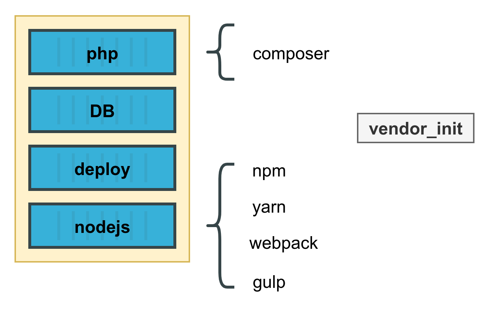

Модифицируется под проект через .env переменные (фича конкретных docker образов)
...## Services versions ##PHP_VERSION=registry.gitlab.com/webpractik/php-images/8.0-apacheMYSQL_VERSION=alterway/mysql:8.0## MYSQL ##LOCALTIME=Europe/Moscow## Bitrix php specific settingsPHP__date.timezone=Europe/MoscowPHP__memory_limit=128MPHP__display_errors=OnPHP__upload_max_filesize=50M...
Как это выглядит для тимлида
Начальная настройка (1 раз) ~ пара минут
Тимлид настраивает проект и коммитит .env.example
Для этого есть команда wpdeploy new которая скопирует дефолтный конфиг
Как это выглядит для разработчика
Разработчик клонирует проект
wpdeploy env - копирует .env.example в .env
wpdeploy up - поднимает окружение
А как же ядро и база?
Контейнер deploy
wpdeploy deploy — запускаем скрипт деплоя.
Небольшой скрипт, который умеет по прокинутому ключу сходить на прод (или в отдельное хранилище) за базой и скачать ее.
Получается для разворота проекта с нуля
Разработчик клонирует проект
wpdeploy env - копирует .env.example в .env
wpdeploy deploy - скачивает ядро и базу
wpdeploy up - поднимает окружение
А зависимости?

Тоже предусмотрели
wpdeploy vendor_init — запускает composer/npm/yarn/webpack в зависимости от проекта.
Причем запускает его в отдельном контейнере с ПО нужной версии, а не на хостовой машине, что избавляет от необходимости с этим париться.
Достижение цели
Наш внутренний скрипт работает уже несколько лет и позволяет практически любой проект развернуть за 5 минут, не напрягаясь, успев за это время налить себе кофе, пока твой проект выкачивается и билдится.
Не нужно знать docker и linux, вход для джунов упростился. Проект сразу работает и можно изучать код, а потом инфраструктуру.
Развитие и выложить в opensource
Написан на коленках и быстро
Есть некоторые штуки про наше внутреннее устройство сети (не секьюрно выкладывать)
В планах переписать на go, тогда мб выложим =)
Бонус! Wpdeploy + kubernetes =)
Растем! Больше проектов на kubernetes!
Вход в kubernetes сложный, а я хочу кодить и мимими!
Kuberentes
wpdeploy kuber up - устанавливает в систему кубер, helm, werf, kubectl (если не было) и поднимает проект
wpdeploy kuber delete - вырубает релиз helm
wpdeploy kuber down - опускает проект и вырубает кубер
Minikube vs k3s
Начинали с minikube
Перешли на k3s Намного менее прожорливый, но сертифицированный куб!
k3s, SPA и frontend разработчики
Не хочу куб, хочу на ноутбуке только спашечку пилить)
Сделали на SPA приложениях proxy, которое проксирует сразу на release-candidat или work площадку все запросы
Защитили ключами, на проде не прокатит
Стоит ли дать windows 2 шанс? Мое ИМХО
WSL1 - крутая идея
WSL2 - даунгрейд, практически не отличается от виртуалки, со всеми вытекающими минусами
Docker работает не стабильно. Новинки вроде krio, containerd - или не поддерживаются или с багами
Как следствие kuber и все его подмножества тоже не стабильны
Опять приходим к тому что занимаемся борьбой с системой вместо работы
Подойдет для особо ярых энтузиастов с кучей свободного времени и желания =)
Windows - рабочий вариант
Выделяем по виртуалке каждому разрабу в облаке (включена только во время работы)
На ней он все разворачивает.
Минусы работы синхронизации через phpstorm и производительности (виртуалки обычно более слабые процы)